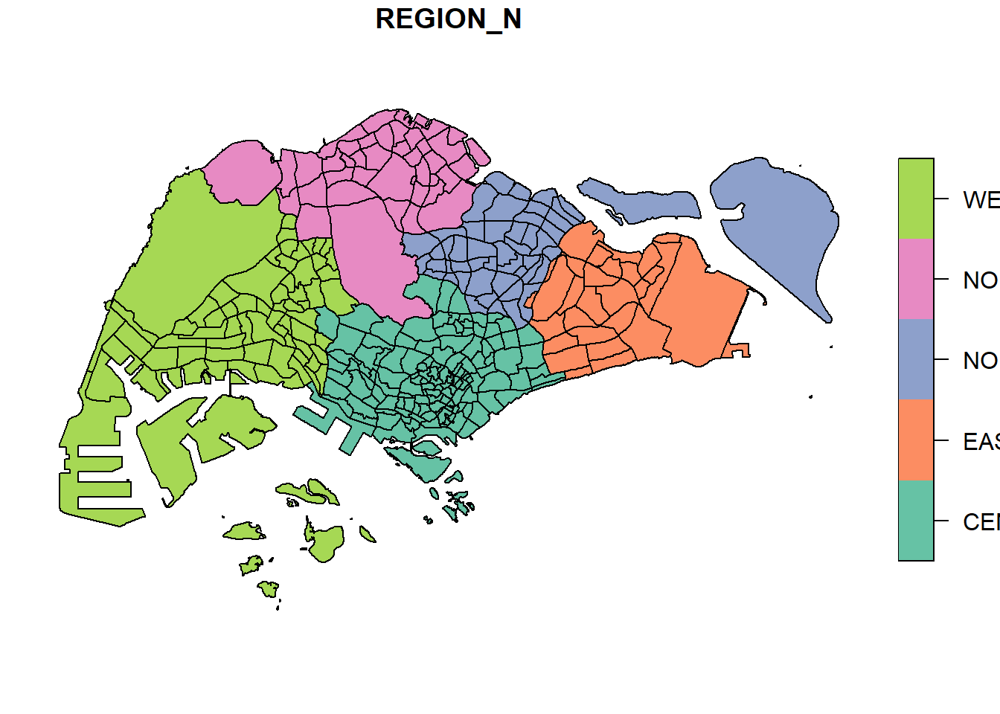

pacman::p_load(sf, tidyverse)1A: Geospatial Data Wrangling with R
1. Overview
In this hands-on exercise, I learn how to import and wrangle geospatial data in using appropriate R Packages.
2. Getting Started
The following code chunk installs and loads sf and tidyverse packages into R environment.
Master Plan 2014 Subzone Boundary (Web) from data.gov.sg
Pre-Schools Location from data.gov.sg
Cycling Path from LTADataMall
Latest version of Singapore Airbnb listing data from Inside Airbnb
3. Importing Geospatial Data
3.1. Importing Polygon Feature Data
The following code chunk uses ‘st_read()’ function from the sf package to import ‘MP14_SUBZONE_WEB_PL’ shapefile into R as polygon feature data frame.
mpsz <- st_read(dsn = "data/geospatial", layer = "MP14_SUBZONE_WEB_PL")Reading layer `MP14_SUBZONE_WEB_PL' from data source
`D:\scwsu\ISSS624\Hands-on_Ex1\data\geospatial' using driver `ESRI Shapefile'
Simple feature collection with 323 features and 15 fields
Geometry type: MULTIPOLYGON
Dimension: XY
Bounding box: xmin: 2667.538 ymin: 15748.72 xmax: 56396.44 ymax: 50256.33
Projected CRS: SVY21The ‘mpsz’ simple feature data frame consists of 323 multipolygon features and includes 15 fields. It is defined using the svy21 projected coordinate system.
3.2. Importing Polyline Feature Data
The following code chunk uses ‘st_read()’ function from the sf package to import ‘CyclingPath’ shapefile into R as line feature data frame.
cyclingpath <- st_read(dsn = "data/geospatial",
layer = "CyclingPathGazette")Reading layer `CyclingPathGazette' from data source
`D:\scwsu\ISSS624\Hands-on_Ex1\data\geospatial' using driver `ESRI Shapefile'
Simple feature collection with 2558 features and 2 fields
Geometry type: MULTILINESTRING
Dimension: XY
Bounding box: xmin: 11854.32 ymin: 28347.98 xmax: 42626.09 ymax: 48948.15
Projected CRS: SVY21The ‘cyclingpath’ linestring feature data frame contains a total of 2558 features and comprises 2 fields. It is also defined within the svy21 projected coordinate system.
3.3. Importing GIS Data
The following code chunk uses ‘st_read()’ function from the sf package to import ‘PreSchoolsLocation’ into R.
preschool <- st_read("data/geospatial/PreSchoolsLocation.kml")Reading layer `PRESCHOOLS_LOCATION' from data source
`D:\scwsu\ISSS624\Hands-on_Ex1\data\geospatial\PreSchoolsLocation.kml'
using driver `KML'
Simple feature collection with 2290 features and 2 fields
Geometry type: POINT
Dimension: XYZ
Bounding box: xmin: 103.6878 ymin: 1.247759 xmax: 103.9897 ymax: 1.462134
z_range: zmin: 0 zmax: 0
Geodetic CRS: WGS 84The ‘preschool’ point feature data frame contains a combined total of 2290 features and comprises 2 fields. Notably, unlike the two preceding simple feature data frames, ‘preschool’ employs the wgs84 geographic coordinate system.
4. Checking the Content of A Simple Feature Data Frame
The column in the simple feature (sf) data frame that holds the geometries is structured as a list with a class of sfc. There are two methods to inspect the data within it:
Obtain the geometry list-column by using either ‘mpsz$geom’ or ‘mpsz[[i]]’.
Utilize ‘st_geometry’ to present details about the feature class, including information about the geometry type, the geographic extent of the features, and the coordinate system used in the data.
st_geometry(mpsz)Geometry set for 323 features
Geometry type: MULTIPOLYGON
Dimension: XY
Bounding box: xmin: 2667.538 ymin: 15748.72 xmax: 56396.44 ymax: 50256.33
Projected CRS: SVY21
First 5 geometries:A peek into the data using the ‘glimpse’ function from the dplyr package unveils relevant attribute details, including the data type of each field.
glimpse(mpsz)Rows: 323
Columns: 16
$ OBJECTID <int> 1, 2, 3, 4, 5, 6, 7, 8, 9, 10, 11, 12, 13, 14, 15, 16, 17, …
$ SUBZONE_NO <int> 1, 1, 3, 8, 3, 7, 9, 2, 13, 7, 12, 6, 1, 5, 1, 1, 3, 2, 2, …
$ SUBZONE_N <chr> "MARINA SOUTH", "PEARL'S HILL", "BOAT QUAY", "HENDERSON HIL…
$ SUBZONE_C <chr> "MSSZ01", "OTSZ01", "SRSZ03", "BMSZ08", "BMSZ03", "BMSZ07",…
$ CA_IND <chr> "Y", "Y", "Y", "N", "N", "N", "N", "Y", "N", "N", "N", "N",…
$ PLN_AREA_N <chr> "MARINA SOUTH", "OUTRAM", "SINGAPORE RIVER", "BUKIT MERAH",…
$ PLN_AREA_C <chr> "MS", "OT", "SR", "BM", "BM", "BM", "BM", "SR", "QT", "QT",…
$ REGION_N <chr> "CENTRAL REGION", "CENTRAL REGION", "CENTRAL REGION", "CENT…
$ REGION_C <chr> "CR", "CR", "CR", "CR", "CR", "CR", "CR", "CR", "CR", "CR",…
$ INC_CRC <chr> "5ED7EB253F99252E", "8C7149B9EB32EEFC", "C35FEFF02B13E0E5",…
$ FMEL_UPD_D <date> 2014-12-05, 2014-12-05, 2014-12-05, 2014-12-05, 2014-12-05…
$ X_ADDR <dbl> 31595.84, 28679.06, 29654.96, 26782.83, 26201.96, 25358.82,…
$ Y_ADDR <dbl> 29220.19, 29782.05, 29974.66, 29933.77, 30005.70, 29991.38,…
$ SHAPE_Leng <dbl> 5267.381, 3506.107, 1740.926, 3313.625, 2825.594, 4428.913,…
$ SHAPE_Area <dbl> 1630379.27, 559816.25, 160807.50, 595428.89, 387429.44, 103…
$ geometry <MULTIPOLYGON [m]> MULTIPOLYGON (((31495.56 30..., MULTIPOLYGON (…Using ‘head()’ in the base R provides a comprehensive view of a feature object’s information.
head(mpsz, n=5)Simple feature collection with 5 features and 15 fields
Geometry type: MULTIPOLYGON
Dimension: XY
Bounding box: xmin: 25867.68 ymin: 28369.47 xmax: 32362.39 ymax: 30435.54
Projected CRS: SVY21
OBJECTID SUBZONE_NO SUBZONE_N SUBZONE_C CA_IND PLN_AREA_N
1 1 1 MARINA SOUTH MSSZ01 Y MARINA SOUTH
2 2 1 PEARL'S HILL OTSZ01 Y OUTRAM
3 3 3 BOAT QUAY SRSZ03 Y SINGAPORE RIVER
4 4 8 HENDERSON HILL BMSZ08 N BUKIT MERAH
5 5 3 REDHILL BMSZ03 N BUKIT MERAH
PLN_AREA_C REGION_N REGION_C INC_CRC FMEL_UPD_D X_ADDR
1 MS CENTRAL REGION CR 5ED7EB253F99252E 2014-12-05 31595.84
2 OT CENTRAL REGION CR 8C7149B9EB32EEFC 2014-12-05 28679.06
3 SR CENTRAL REGION CR C35FEFF02B13E0E5 2014-12-05 29654.96
4 BM CENTRAL REGION CR 3775D82C5DDBEFBD 2014-12-05 26782.83
5 BM CENTRAL REGION CR 85D9ABEF0A40678F 2014-12-05 26201.96
Y_ADDR SHAPE_Leng SHAPE_Area geometry
1 29220.19 5267.381 1630379.3 MULTIPOLYGON (((31495.56 30...
2 29782.05 3506.107 559816.2 MULTIPOLYGON (((29092.28 30...
3 29974.66 1740.926 160807.5 MULTIPOLYGON (((29932.33 29...
4 29933.77 3313.625 595428.9 MULTIPOLYGON (((27131.28 30...
5 30005.70 2825.594 387429.4 MULTIPOLYGON (((26451.03 30...# adjust the "n" argument to modify the number of observations to a reasonable value. 5. Plotting Geospatial Data
In the realm of geospatial data analytics, merely examining feature details is inadequate. To visualize geospatial features, you can employ the ‘plot()’ function from R Graphic.
Note
By default, a sf object generates a multiplot. The subsequent plot illustrates the initial 9 of 15 attributes. To adjust the quantity of attributes displayed in the plot, modify the ‘max.plot’ parameter to a desired value.
plot(mpsz)
To plot the geometric data exclusively , apply ‘st_geometry’ to the data frame prior to initiating the plot.
plot(st_geometry(mpsz))
A plot focusing on a particular attribute of the sf object can also be created.
plot(mpsz["PLN_AREA_N"])
plot(mpsz["SUBZONE_N"])
plot(mpsz["REGION_N"])
Important